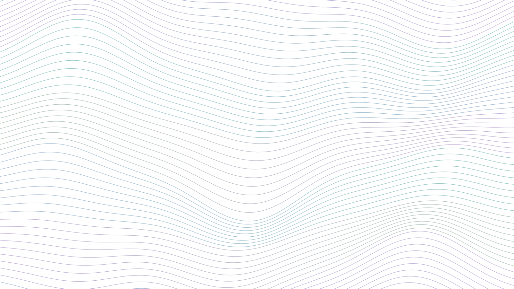
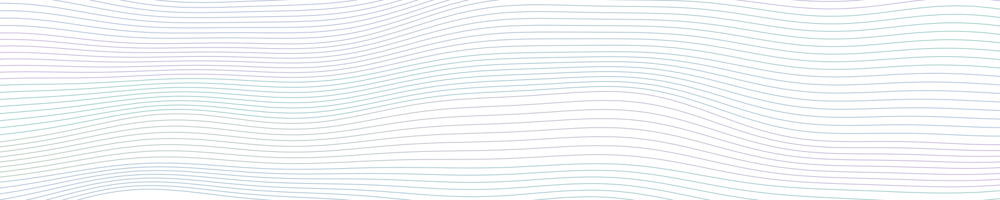

Soft landscapes, sharp science
The brand pairs the rigor of a research lab with the calm of a landscape at dusk. Think topographic contour lines, moving water, and Dune-cover lavender skies. It should feel modern, quiet, and trustworthy: never loud or gimmicky.
Four words guide every choice: clear · calm · grounded · curious.
- Personality
- A field scientist who also writes clean code
- Inspiration
- ltc "ploen" palette · the motion of water · Dune-cover skies · contour maps
- Signature
- Thin flowing contour lines, glassy cards, geometric headlines
The ploen core
Five colors from the ltc "ploen" palette carry the brand. Slate does the heavy
lifting; the rest are accents.
Water & land extensions
Blue-greens that bridge the palette toward water and vegetation.
Neutrals
Gradients
Contrast rules: body text is Ink or Slate on light backgrounds (≥ 7:1). Links use Eucalyptus (5:1). Never set text in Periwinkle, Lavender, Apricot, or Seafoam; they're for surfaces and data only.
Clean geometry, warm reading
tracking −0.025em
0.74rem, +0.16em, caps
17px / 1.7
All three are free Google Fonts. Use them in slides and posters too (Jost for titles, labels, and buttons; Lora for reading text). Headlines are sentence case, never all caps.
Contour lines in motion
Thin contour lines that drift from water-blue to lavender to sage on a light mist background, part
topographic map and part current. They suggest motion without heavy color blocks. Generated by
scripts/make_waves.py: change --seed for a new shape, or edit FLOW_STROKES to re-tint.



Hero (home) · Banner (page titles) · Monochrome texture (stat band & footer).
A filled-band version (assets/waves-bands.svg) is kept for posters, but isn't used on the site.
Monogram & wordmark

Three waves (lavender, seafoam, apricot) on slate: sky, water, and land. Use as the favicon, social avatar, or slide corner mark. The wordmark is simply the name set in Jost 500.
Building blocks
Card title in Jost
Short description in muted Lora. Cards are white, rounded 20px, with a horizon accent on top.
Charts & maps in the same voice
Use the ploen palette directly in figures so papers, posters, and the site feel like one body of work.
# R
# install.packages("ltc")
library(ltc); library(ggplot2)
ploen <- c("#3F5671", "#83A1C3", "#CEB5C8", "#FAC898", "#B17776")
scale_fill_ltc("ploen") # discrete
scale_colour_ltc("ploen", discrete = FALSE) # continuous
water_land <- c("#3F726E", "#A8D5CF", "#9DB8A6", "#F8EEE3") # sequential-ish extension
theme_set(theme_minimal(base_family = "Jost"))# Python
import matplotlib as mpl
ploen = ["#3F5671", "#83A1C3", "#CEB5C8", "#FAC898", "#B17776"]
mpl.rcParams["axes.prop_cycle"] = mpl.cycler(color=ploen)
mpl.rcParams["font.family"] = "Jost"Order matters: Slate → Periwinkle → Lavender → Apricot → Rose keeps adjacent series distinct. For diverging maps, run Slate ↔ Mist ↔ Rose.
How it sounds
Do
- Lead with the question, then the method, then the number
- Use concrete figures ("400 km²", "434K pixel-months")
- Write in first person, plainly and warmly
- Credit collaborators, advisors, and partners
Don't
- Stack jargon or acronyms without a gloss
- Use bright saturated colors or heavy drop shadows
- Set text in all caps (except tiny eyebrow labels)
- Crowd pages; whitespace is part of the brand
Image style
Favor natural light, wide landscapes, and golden or blue hour. Soft, slightly desaturated edits sit best next to the palette. Fieldwork photos should show the place and the work, not just people posing. Export at ≥ 2000px on the long edge; the build script handles resizing.